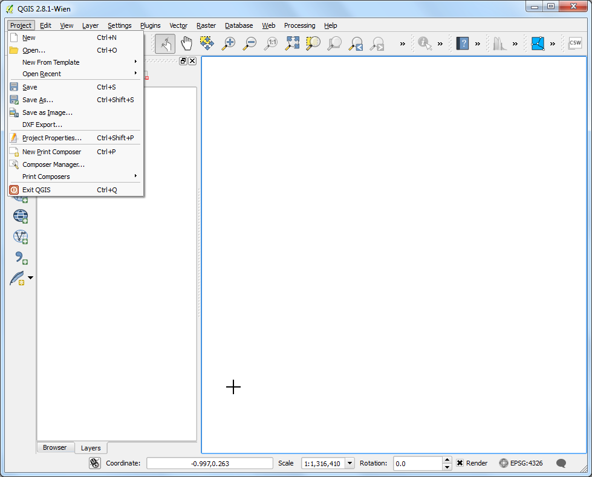
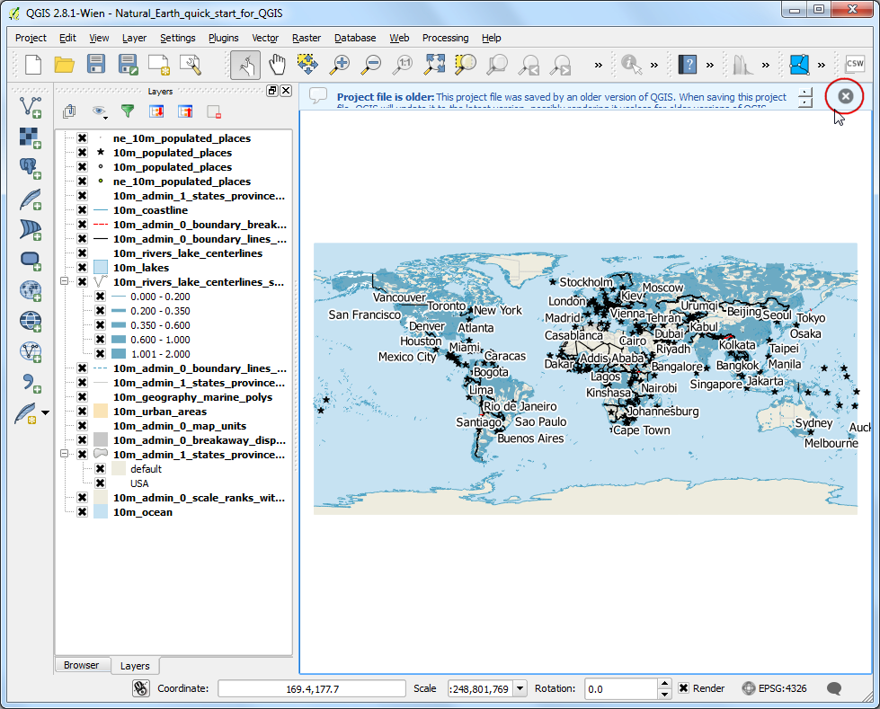
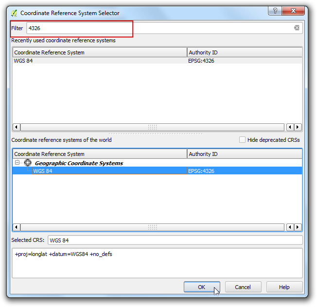

Erzeugen einer Karte
[ Download PDF A4 Letter ]
Oft ist es nötig eine Karte zu erstellen, die gedruckt oder veröffentlicht werden kann. QGIS hat ein leistungsfähiges Werkzeug, welches sich Print Composer nennt oder in deutsch als Druckzusammenstellung bezeichnet wird. Dieses ermöglicht, aus Ihren Layern und Sammlungen eine Karte zu erstellen.
Übersicht der Aufgabe
Die Anleitung zeigt, wie eine Karte von Japan mit Standard-Kartenelementen wie Karte, Gitter, Nordpfeil, Maßstabselement und Beschriftungen erstellt wird.
Weitere Fähigkeiten, die Sie erlernen
Daten besorgen
Wir werden den Datensatz von Natural Earth verwenden - konkret das Natural Earth Quick Start Kit, welches mit schön gestalteten Layern kommt und direkt in in QGIS geladen werden kann.
Download des Natural Earth Quickstart Kit.
Datenquelle [NATURALEARTH]
Arbeitsablauf
Laden und entpacken Sie das Natural Earth Quick Start Kit. Öffnen Sie QGIS. Klicken Sie auf .

Navigieren Sie zum Verzeichnis, wo Sie die Natrual Earth Daten entpackt haben. Sie sollten eine Datei sehen, die Natural_Earth_quick_start_for_QGIS.qgs benannt ist. Das ist die Projektdatei, die die vordefinierten Layer im QGIS Dokumentformt enthält. Klicke Öffnen

Sie sollten eine ganze Anzahl an Layern in der Legende sehen und eine gestaltete Weltkarte im QGIS Kartenfenster

In diesem Tutorial erstellen wir eine Karte von Japan. Klicke die Hineinzoomen Schaltfläche und zeichnen Sie ein Rechteck um Japan, um auf den Ausschnitt zu vergrössern.

Sie können mehrere Kartenlayer ausschalten, die wir für diese Karte nicht benötigen. Deaktivieren Sie die Checkbox neben dem 10m_geography_marine_polys und 10m_admin_0_map_units Layer. Bevor wir eine taugliche Karte für den Druck erstellen, müssen wir eine geeignete Projektion auswählen. Die verwendeten Daten kommen in einem Koordinatenbezugssystem (KBS), in dem die Einheiten in Bogengrad verwendet werden. Dies ist für eine Karte ungeeignet, wenn man Distanzen in Kilometern oder Meilen verwenden möchte. Dazu benötigen wir ein projiziertes Koordinatensystem, das die Verzerrungen für unser Interessensgebiet minimiert und Meter als Einheit verwendet. Universal Transverse Mercator (UTM) ist eine gute Wahl für ein solches projiziertes Koordinatensystem. Es ist ebenso global gültig, so dass es ein guter verwendbarer Standard ist. Verwenden Sie die UTM-Zone, in der Ihr Interessensgebiet liegt, um die Verzerrung für den Breich zu minimieren. In unserem Fall werden wir die UTM-Zone 54N benutzen. Klicke den KBS Status Button unten rechts im QGIS-Fenster.
Bemerkung
Für Japan ist das Japan Plane Rectangular CS ein projiziertes Koordinatenbezugssystem (KBS), das für minimale Verzerrungen gedacht ist. Es ist in 18 Zonen unterteilt. Wenn Sie in kleineren Regionen Japans arbeiten, ist es besser dieses KBS zu verwenden.

Aktivieren Sie Spontan-KBS-Transformation aktivieren. Geben Sie Tokyo utm zone54n im Filter Suchfeld ein. Wenn Sie die Ergebnisse sehen, wählen Sie Tokyo / UTM Zone 54N - EPSG:3095. Klicke Anwenden.

Nun können wir beginnen, unsere Karte zusammen zu stellen. Gehen Sie zu .

Sie werden aufgefordert einen Titel für die Zusammenstellung einzugeben. Sie können es auch leer lassen und mit Ok bestätigen.
Bemerkung
Wird kein Titel eingegeben, wird automatisch eine Name vergeben wie Composer 1.

Im Zusammenstellungsfenster klicken Sie Volle Ausdehnung, die gesamte Fläche des Layouts darzustellen. Nun möchten wir die Kartenansicht, die wir in der QGIS Arbeitsfläche sehen in den Composer bringen. Gehen Sie zu .

Sobald der Button Neue Karte hinzufügen aktiv ist, halten Sie die linke Maustaste gedrückt und ziehen ein Rechteck auf, wo Sie die Karte einfügen möchten.

Das Rechteck wird mit dem Inhalt der QGIS Arbeitsfläche gerendert. Dabei kann möglicher Weise der Kartenauschnitt nicht den kompletten Bereich abdecken. Wählen Sie , um die Karte im Fenster anzupassen und zu zentrieren.

- Let us adjust the zoom level for the given map. Click on the
Item Properties tab and enter 7000000 for Scale
value.

- Now we will add a map inset that shows a zoomed in view for the Tokyo area.
Before we make any changes to the layers in the main QGIS window, check
the Lock layers for map item and Lock layer styles
for map item boxes. This will ensure that if we turn off some layers or
change their styles, this view will not change.

- Switch to the main QGIS window. Use the Zoom In button to zoom
to the area around Tokyo.

- There are some duplicate labels coming from the ne_10m_populated_places
layer. You can turn it off for this view.

- We are now ready to add the map inset. Switch the the Print
Composer window. Go to .

- Drag a rectangle at the place where you want to add the map inset. You will
now notice that we have 2 map objects in the Print Composer. When making
changes, make sure you have the correct map selected. Select the Map 1
object that we just added from the Items panel. Select the
Item properties tab. Scroll down to the Frame panel
and check the box next to it. You can change the color and thickness of the
frame border so it is easy to distinguish against the map background.

- One neat feature of the Print Composer is that it can automatically
highlight the area from the main map which is represented in our inset.
Select the Map 0 object from the Items panel. In the
Item properties tab, scroll down to the Overviews
section. Click the Add a new overview button.

- Select Map 1 as the Map Frame. What this is telling the
Print Composer is that it must highlight our current object Map 0 with
the extent of the map shown in the Map 1 object.

- Now that we have the map inset ready, we will add a grid and zebra border
to the main map. Select the Map 0 object from the Items
panel. In the Item properties tab, scroll down to the
Grids section. Click the Add a new grid button.

- By default, the grid lines use the same units and projections as the
currently selected map projections. However, it is more common and useful
to display grid lines in degrees. We can select a different CRS for the
grid. Click on the change... button next to CRS.

- In the Coordinate Reference System Selector dialog, enter
4326 in the Filter box. From the results, select the
WGS84 EPSG:4326 as the CRS. Click OK.

- Select the Interval values as 5 degrees in both
X and Y direction. You can adjust the
Offset to change where the grid lines appear.

- Scroll down to the Grid frame section and select a frame style
that suits your taste. Also check the Draw coordinates box.

- Adjust the Distance to map frame till the coordinates are
legible. Change the Coordinate precision to 1 so the
coordinates are displayed only upto the first decimal.

- Now we will add a North Arrow to the map. The Print Composer comes with a
nice collection of map-related images - including many types of North
Arrows. Click .

- Holding your left mouse button, draw a rectangle on the top-right corner of
the map canvas. On the right-hand panel, click on the Item
Properties tab and expand the Search directories section and
select the North Arrow image of your liking.

- Now we will add a scale bar. Click on .

- Click on the layout where you want the scalebar to appear. In the
Item Properties tab, make sure you have chosen the correct map
element for which to display the scalebar. Choose the Style that fit your
requirement. In the Segments panel, you can adjust the number
of segments and their size.

- It is time to label our map. Click on .

- Click on the map and draw a box where the label should be. In the
Item Properties tab, expand the Label section and
enter the text as shown below. We can enter the text as HTML as well.
Check the box Render as Html so the composer will interpret the
HTML tags.
<div align=center>
<h1>Map of Japan</h1>
</div>

- Similarly add another label to add the data and software credits.

- Once you are satisfied with the map, you can export it as Image, PDF or
SVG. For this tutorial, let’s export it as an image. Click
.

- Save the image in the format of your liking. Below is the exported PNG
image.